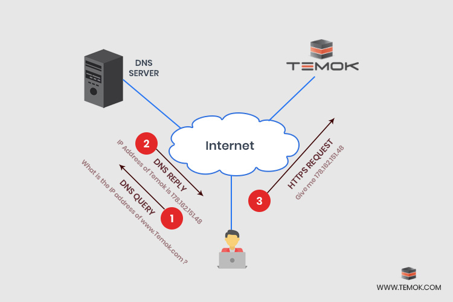
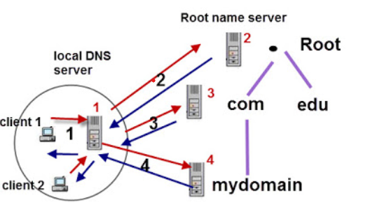

Ican and DNS
Published by: Anxhela Mehmetaj
For example, the Temok’s website can be found at “temok.com” rather than “178.162.151.48” but the HTTP request will use the IP address provided by the DNS server. Another advantage of DNS is the prevention of a domain from being tied to any particular computer because the link between an IP address and domain name can be changed quickly. Once the change has occurred, it will take less than 48 hours because of constantly updating DNS infrastructure. Any domain name is based on two elements: before and after the dot. The element after the dot such as “com” “net” “gov” “edu” “org” and so on, is known as TLD (Top-Level-Domain). All domains under any particular TLD with their IP addresses are under one company known as ICANN registry. This registry has the complete list of all domains under any TLD in a well-organized way.
The Internet Corporation for Assigned Numbers and Names.
An American multistakeholder group, nonprofit organization responsible for coordinating the maintenance and procedures of several databases related to the namespaces and numerical spaces of the Internet, ensuring the network's stable and secure operation. ICANN performs the actual technical maintenance work of the Central Internet Address pools and DNS root zone registries pursuant to the Internet Assigned Numbers Authority (IANA) function contract.ICANN's primary principles of operation have been described as helping preserve the operational stability of the Internet; to promote competition; to achieve broad representation of the global Internet community; and to develop policies appropriate to its mission through bottom-up, consensus-based processes.
Domain Name
ICANN Focus is to manage Internet Protocol numbers and Domain Name System root. A domain name is an identification string that defines a realm of administrative autonomy, authority or control within the Internet. Domain names are used in various networking contexts and for application-specific naming and addressing purposes.
DNS
First Query
1.Client 1 queries local DNS Server (1) for host www.mydomain.com. 2.Local DNS server doesn't know the Answer so it queries a Root DNS serever.(2) 3.Root server refers DNS server 1 to DNS server 3 responsible for .com domain name space. 4.DNS server 3 refers DNS server 1 to DNS server 4 responsible for the mydomain domain name space. 5. DNS server 4 returns the answer to DNS server 1. DNS server 1 returns the answer to client 1.
Second Query
1.Client 2 queries local DNS server(1) for host www.mydomain.com 2.DNS server 1 return the answer to client 2 from it's DNS cache.
DNS Structure
A system called the DNS associated names like www.example.com with the corresponding addresses. Computer uses the DNS to look up domain names and get the associated IP address which is used to connect your computer to the destination on the internet. One DNS server cannot handle all requests from all devices. So, DNS servers are distributed into a hierarchy, and are divided into zones, splitting up responsibility for the major domain like org, com, .net, etc.